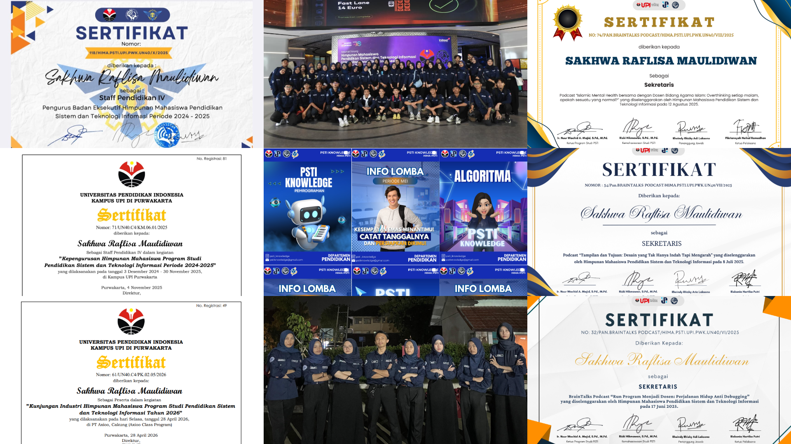
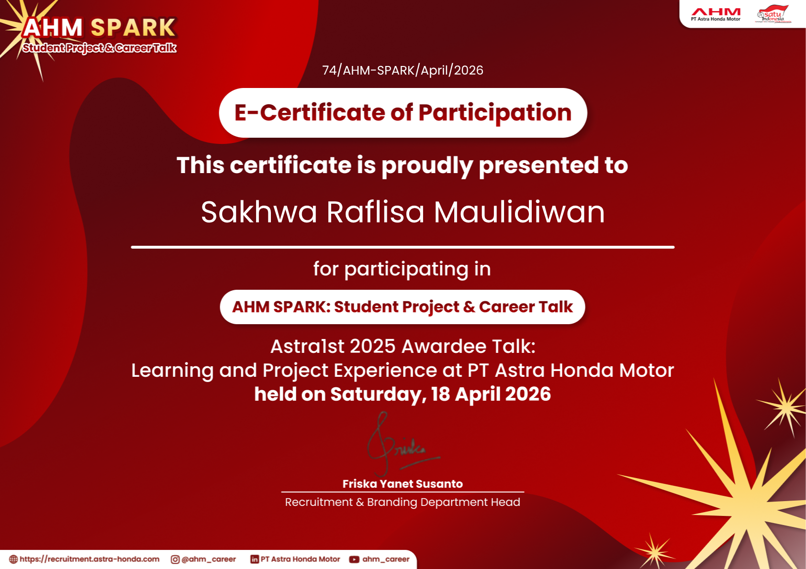
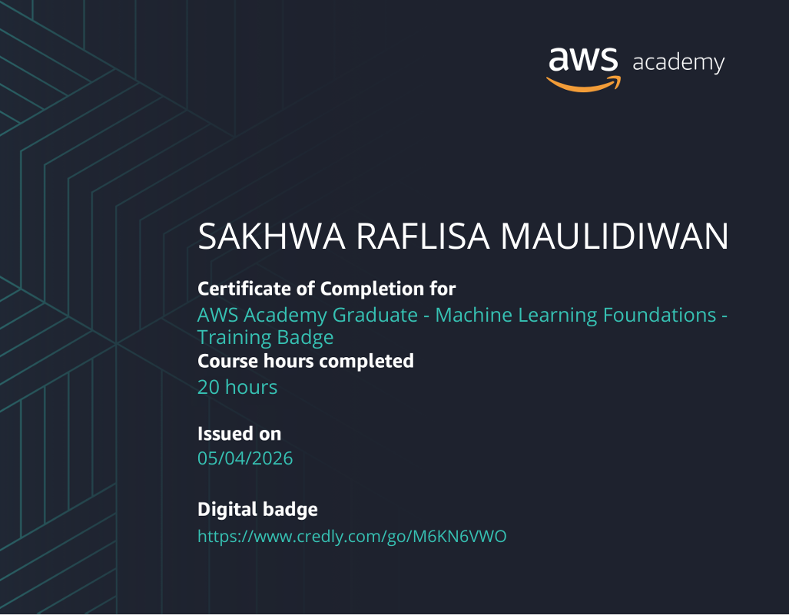
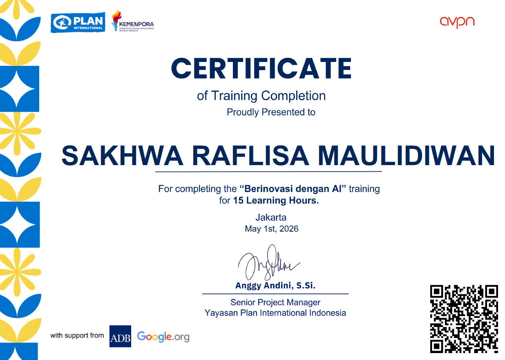
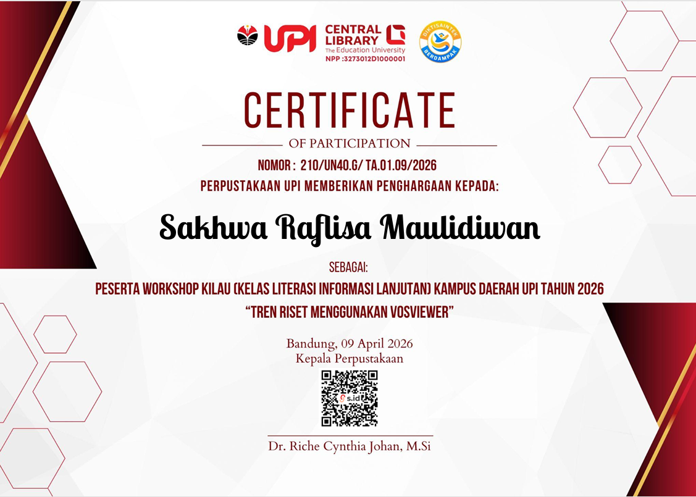
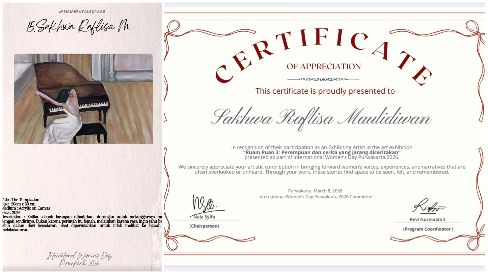
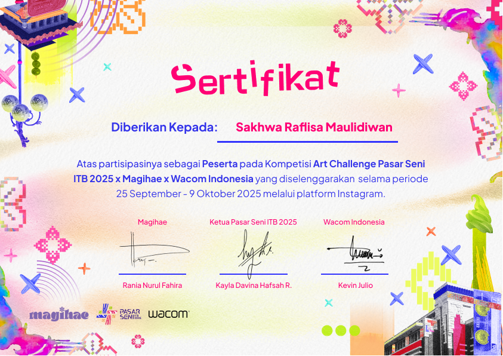

Personal Summary
An ambitious and detail-oriented undergraduate Information Technology and Systems Education student at Universitas Pendidikan Indonesia, maintaining a strong academic and technical focus on digital systems. Proven experience driving academic engagement, managing documentation, and spearheading cross-functional technology initiatives. Adept at leveraging analytical problem-solving, creative visual implementation, and modern frameworks to engineer impactful digital solutions.
Education
S1 – Pendidikan Sistem dan Teknologi Informasi
Universitas Pendidikan Indonesia
Purwakarta, Indonesia
Technical & Professional Skills
Hard Skills
- Beginner Web Development (Frontend & Backend)
- Database Management
- Digital Illustration & Asset Creation
- Interactive Media Design
Tools & Frameworks
Office & Productivity
Soft Skills
- Professional Communication
- Cross-functional Teamwork
- Structured Problem Solving
- Creative Thinking
- Accountability & Project Management
Project Experience
Interactive Software Developer
Educational Media Initiative · Multimedia Interactive Media Game Engine Integration
Purwakarta, Indonesia
- Architected and programmed an interactive, story-driven learning simulation using the Ren'Py visual novel engine to enhance cultural education preservation.
- Integrated customised digital scripts, dialogue branches, logical conditional structures, and optimised state tracking to maximise educational user engagement.
- Rendered original asset configurations, applying both technical software logic and creative digital media principles to make material easily digestible.
Web Developer – Student Achievement Platform
Universitas Pendidikan Indonesia
Purwakarta, Indonesia
- Deployed an institutional web-based platform to track, record, and display student achievements and milestones (Papan Prestasi).
- Utilised Laravel (PHP) alongside HTML, CSS, JavaScript, and Bootstrap to construct a responsive frontend and robust backend authentication module.
- Designed the full ER database structure utilising MySQL for secure storage, credential seeders, and efficient user query performance.
- Managed code deployment pipelines and version control workflows securely using Git and GitHub.
Assistant Illustrator in Research Project
Universitas Pendidikan Indonesia
Purwakarta, Indonesia
- Conducted systematic literature reviews to gather research references and academic articles on digital literacy and educational frameworks.
- Designed illustration styles for gamification badges, aligning visual aesthetics with diverse learning styles (visual, feedback, kinesthetic).
- Translated pedagogical content and theoretical research methodologies into high-fidelity graphics, game layouts, and intuitive interface assets.
Asset Artist
Roblox Game Development Project
- Contributed as a team member designing custom avatars and landscape objects for a specialised gamification system inside the Roblox environment.
Organizational Experience
Secretary & Core Executive – Department of Education
Himpunan Mahasiswa PSTI (HIMA PSTI UPI)
Purwakarta, Indonesia
- Managed end-to-end administrative compliance, proposal generation, accountability reporting, and general asset documentation for educational work programs.
- Chief executive for the "PSTI Knowledge" work agenda.
- Planned, researched, and authored educational-technological content blocks distributed to digital media networks, handling consistent monthly layout updates.
- Leveraged Google Workspace to ensure transparent team communication, workflow tracking, and seamless cross-departmental operations.
- Contributed strategically as an active steering committee member for the Departmental Industrial Visitation program.

Professional Development & Certifications
Selected Participant – AHM SPARK: Student Project & Career Talks
PT Astra Honda Motor (AHM)
Engaged in professional career talk intensive tracks focusing on industrial project lifecycles, operational standards, and tech career planning in the automotive tech sector.

AWS Academy Graduate – Machine Learning Foundations
Amazon Web Services (AWS)
Learn about the fundamentals of machine learning, learn the basics to the stage of trying and applying it

Certified Professional – "Innovating with AI" (Berinovasi dengan AI)
Kitakerja.id × Plan International Indonesia
Completed a professional specialisation track validating practical implementation of Generative AI tools to drive business and workspace innovations.

Research Workshop Technical Delegate – Advanced Information Literacy Network
Universitas Pendidikan Indonesia Kampus Daerah
Participated in intensive technical training for research trend mapping, literature mapping, and bibliometric visualisation using VOSviewer software.

Creative Showcases

Exhibiting Artist – "Ruam Puan 3: Women and Unheard Stories"
2026International Women's Day Visual Art Collective Showcase · Purwakarta, Indonesia
Selected to present painting "The Temptation" acrylic on canvas with a theme "Ruam puan 3: perempuan dan cerita yang jarang diceritakan"

Pasar Seni Illustration Competition
2025Creative Arts & Media Showcase
Participated as an illustrator showcasing original digital artwork in a creative arts and media competition.